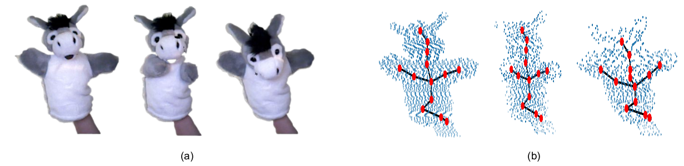
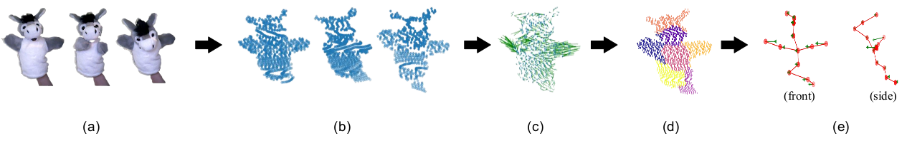
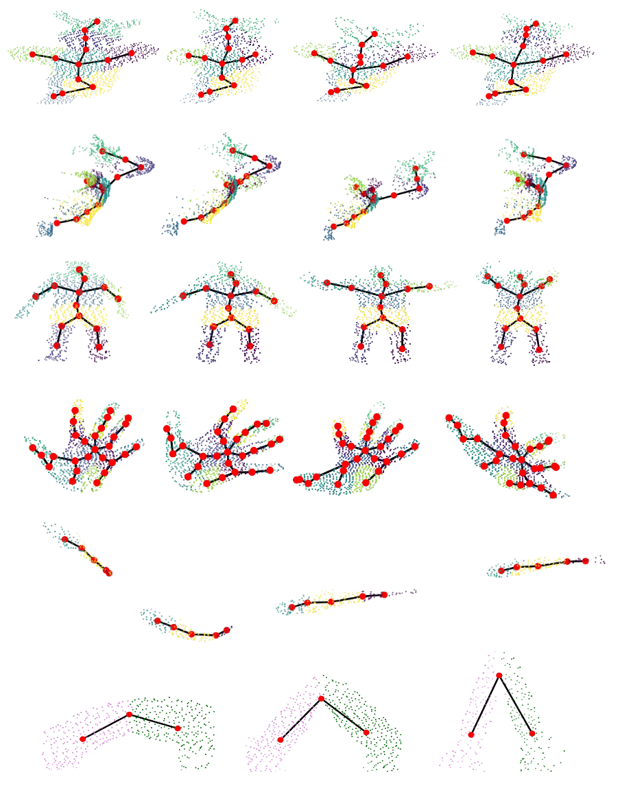

Abstract
We propose an unsupervised method to extract skeleton from single-view depth videos acquired from a modality such as Microsoft Kinect/mobile stereo camera. Our algorithm takes in depth video and outputs per-frame skeleton of the articulated generic object. The presence of noise and inconsistencies in the Kinect video make the skeletonization challenging as opposed to the state-of-the-art skeletonisation methods on complete point clouds. The key contributions include:
- Improved adaptation of Coherent Point Drift algorithm for RGB-D videos
- Spectral clustering that considers the spatio-temporal property of the trajectories to encode rigid and non-rigid motions in the point cloud sequence. Our work improves on the well-known work by Lu et al. which do address inconsistency in clusters formed prior to skeletonisation
- We overcome the limitations of previous skeletal extraction methods that utilize minimum spanning tree (Zhang et al. and Lu et al.) leading to incorrect bones and skeletal structure while extracting skeleton through addition of boundary information of clusters

The Idea

The input for our algorithm is an RGB-D video of the object of interest from which we first extract a sequence of $T$ point clouds, $V = \langle P_1, P_2, \dots, P_T\rangle$. The $i^{th}$ point cloud $P_i$, consists of the point set $\{\mathbf{p}_i^j \mid 1 \le j \le N_i \}$, where $N_i$ is the number of points in $P_i$. We then perform a non-rigid registration of the extracted point set to calculate their trajectory. We cluster the point sets based on their motion by utilizing their trajectory information. As a result, points with similar motion are clustered together, thus, capturing the rigidity in the point cloud. Rigidity is a useful constraint in estimating joint points and creating connections in the skeleton which are consistent with the point cloud geometry. Note that, in this process of skeleton estimation, clusters and the skeleton topology are time-invariant whereas the locations of nodes in the skeleton varies with time.
Results

Skeleton extraction results of our method on Kinect dataset - (Row 1) Puppet doll (Front View), (Row 2) Puppet Doll (Side View), (Row 3) Human, (Row 4) Hand, (Row 5) Fish, and (Row 6) Pipe